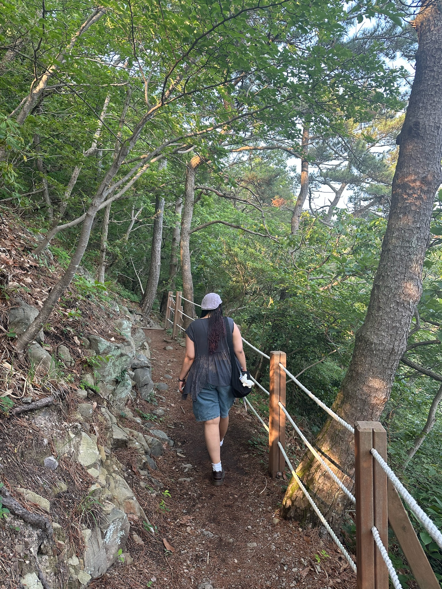
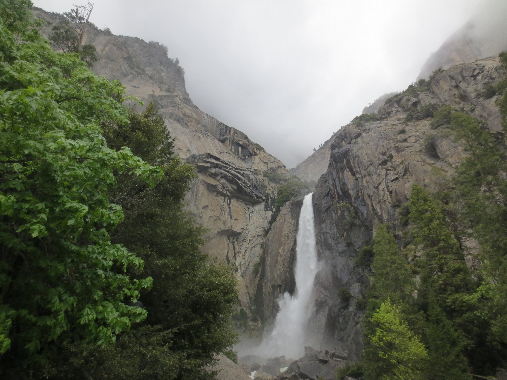
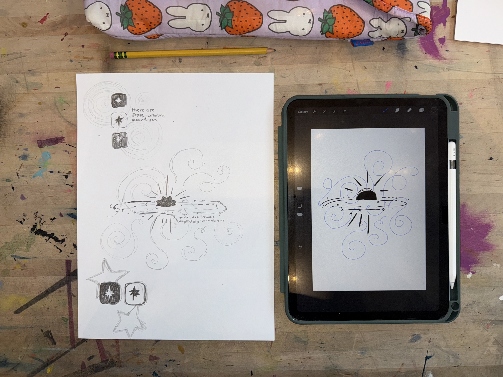
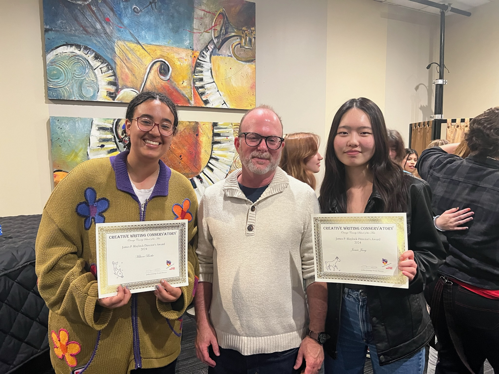
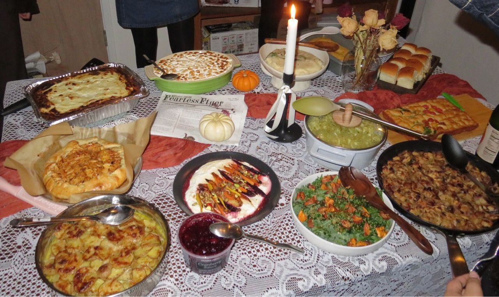
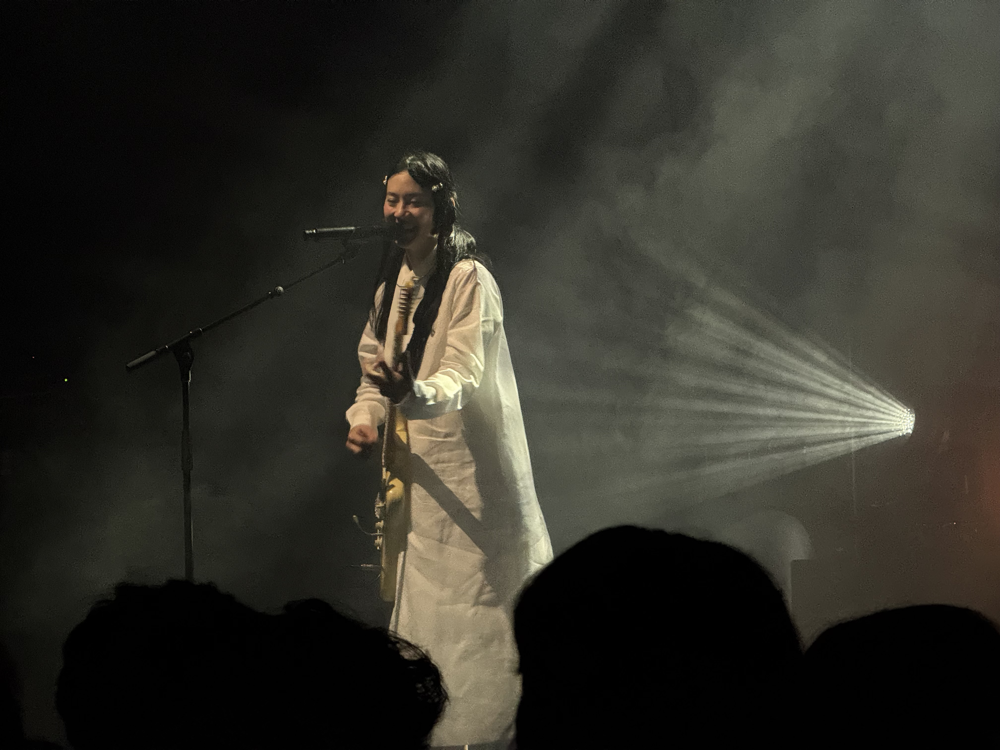
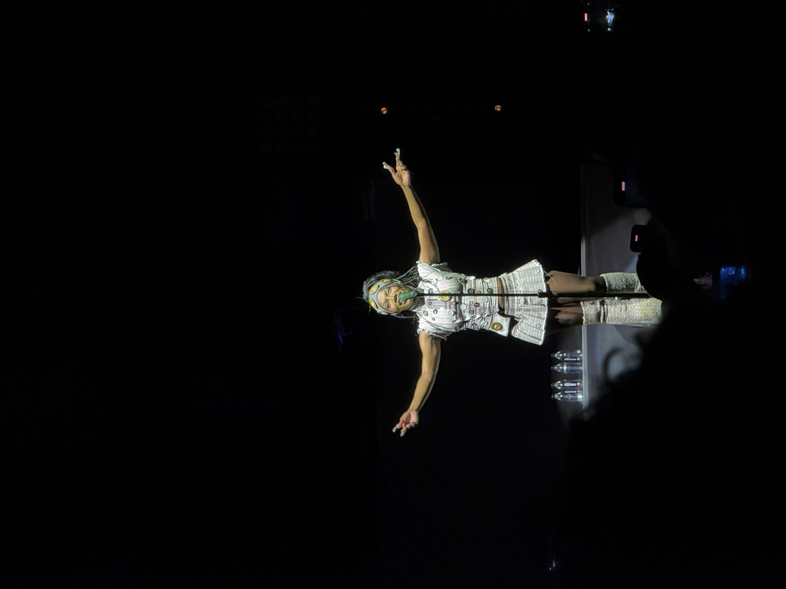
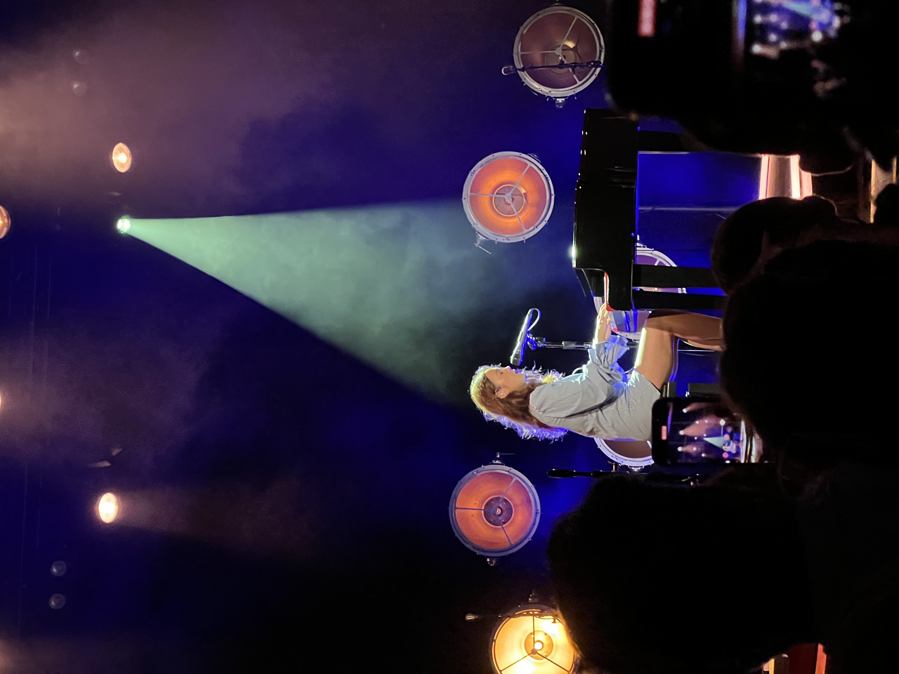

Other Interests
Who I am outside of academics, research, and work.
Hiking
I enjoy exploring hiking trails in the Bay Area, eating my way through all the local sandwich shops along the way.



Art
I enjoy all kinds of art. I've been writing, painting, and drawing my whole life, but I've loved exploring screen-printing, nail art, textile arts, and photography.
The background of this website is drawn by me!


Cooking
I really enjoy cooking and baking large feasts with my friends for celebrations and fun!
We're currently working on perfecting our crème brûlée recipe.


Music
I've been teaching myself electric and acoustic guitar since middle school. I like learning my favorite songs and practicing them for fun.
I also love listening to music of all genres and attending concerts. Some of my favorites are David Bowie, Tame Impala, Evanescence, Bktherula, Kendrick Lamar, Beabadoobee, and The Marías.


